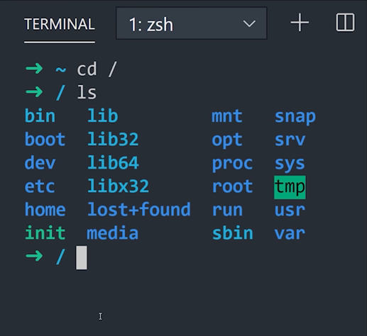

Terminal
Tempo estimado de leitura: 11min
Por não possuir uma interface gráfica, a primeiro contato pode ser intimidador, mas é essencial saber ao menos o básico do terminal para interagir de forma mais prática com seu computador. Neste tópico vamos ensinar e explicar alguns comandos simples, que, no primeiro momento, vão ser de grande ajuda para iniciantes no assunto.
Experimente abrir o terminal e vamos fazer algumas experimentações;
No windows você tinha um gerenciador de tarefas, uma interface que te mostrava como funcionava a estrutura da organização dos seus arquivos, assim podendo entrar e sair de pastas, e acessar esses arquivos, executar, abrir, editar...
A primeira vista vai reparar no símbolo
~no começo da primeira linha, basicamente é uma abreviação para a sua pasta home no terminal.
Diretórios
Com o terminal aberto, utilize o comando cd (change directory) para alterar o diretório atual, com o acréssimo de / você pode acessar os arquivos de sistema do seu computador, então no seu terminal, experimente:
$ cd /
Bem nesse ponto haverá um símbolo
~$no começo do seu terminal, indicando uma nova linha de comando, a frente do sinal de$será o local onde há de ser inserido novos comandos, ao entrar em novas pastas/diretórios/a frente do sinal de~indicando qual a pasta em que você se encontra no momento.
Agora escreva ls (list contents) para poder listar pastas e arquivos dentro daquele diretório. Então dentro da pasta / experimente usar ls:
$ ls

Nesse ponto você pode por exemplo tentar entrar em uma pasta dentro dessa pasta utilizando cd ali acima, junto com o nome de uma pasta presente dentro daquele diretório (que você acabou de ver usando o ls).
$ cd bin
Experimente mais uma vez listar os arquivos dentro desse outro diretório.
O diretório /bin contém os comandos binários essenciais (programas) que devem estar presentes quando o sistema é montado no modo para usuário único. Os aplicativos (como o Chrome, ) são armazenados em /usr/bin, enquanto os programas importantes do sistema e utilitários, como o shell bash, ficam localizados em /bin. O diretório /urs pode ser armazenado em outra partição. Por isso, colocar esses arquivos no diretório /bin garante que o sistema terá os programas mais importantes, mesmo se não houver outros sistemas de arquivos montados. O diretório /sbin é semelhante, pois ele contém os arquivos binários para a administração do sistema.
Bem, sabendo que, independente do seu sistema operacional as pastas do seu computador se comportam como uma árvore, e possuem uma certa hierarquia quanto a sua importância. Isso acontece para que haja uma certa segurança quando formos manipular alguns arquivos. Já que os programas mais importantes para o funcionamento estão no root do computador, e uma de suas ramificações é responsável pelas aplicações instaladas pelo usuário, sendo a nossa usr/bin.
Além da pasta bin que guarda arquivos binários para execução na root, vamos citar alguns outros que provavelmente vai se deparar com eles e se perguntar, sua função ou necessidade, até porque eles também estão consumindo uma parte da "memória" do seu computador.
/sbin: Da mesma forma que a bin, a sbin são conjuntos de executáveis do sistema que cuidam de configurações como a segurança do computador por exemplo. É responsável por pedir credenciais ou permissão de um adm quando for instalar algum programa por exemplo.
/boot: Se chegou a fazer o processo de dual boot, já tem uma ideia do que é guardado aqui dentro. Bem basicamente é tudo que o seu computador precisa para poder iniciar o seu Linux corretamente.
/dev: Como uma abreviação para developers, nessa pasta estão guardadas os arquivos responsáveis pelas configurações de desenvolvedores, no geral a conversa que ocorre entre hardwares como o seu teclado, mouse, câmera, com outras partes do seu computador.
/etc: Guarda também um conjunto de instruções que podem ser configuradas por texto, são tão importantes quanto os arquivos contidos em dev, entretanto podem ser simplesmente serem editados em um editor de texto do seu computador.
/home: Por default, praticamente sempre que abre o seu terminal começa nessa pasta, então funciona quase como o desktop do seu windows.
/lib(32 e 64): É onde as aplicações guardam arquivos ao se instalarem. Serão armazedos arquivos binários como em bin e sbin.
/media e /mnt: São diretórios em que você pode montar um dispositivo físico, como CD-ROM, partição do seu HD, um pendrive etc.
Executáveis
São os arquivos binários que execumatos ao utilizar um . antes do arquivo, algo como ./nomedoarquivo.
Já que temos várias pastas para guardar arquivos, e nem sempre sabemos onde foi parar aquele executável... Bem, dá para adotar algumas estratégias de como podemos agir a partir daqui.
Uma forma interessante de fazer com que o Linux mapeie arquivos executáveis a partir de uma pasta é utilizar o comando echo $PATH.
$ echo $PATH
Isso fará com que seja listado os PATH (que é aquele 'caminho' da 'URL') de onde possuem pastas com executáveis.
Caso queira saber onde contém um binário específico:
$ which curl
Onde which é a abreviação de Which binary is this, e curl o executável que estamos procurando. O retorno vai ser o PATH desse executável.
Instalando um software
Você também pode usar o terminal para instalar programas facilmente. Isso é especialmente útil se o software não está iniciando a instalação sozinho ou se você só quer agilizar o processo.
Para fazer isso, digite o comando sudo apt-get install nome e substitua o “nome” que colocamos no exemplo pelo nome do programa que você quer instalar. Em seguida, é só apertar o “Enter”.
$ sudo apt-get install nome
+ Comandos
sudo: permissões
Por razões de segurança, o Linux trabalha com permissões de usuários. Por isso, determinados comandos ou arquivos são acessíveis apenas pelo próprio dono ou pelo usuário administrador (root). Para que você não tenha que trocar de usuário a todo instante, existe o comando sudo, que garante credenciais de usuário root temporariamente, mediante a informação de uma senha (sua senha de usuário do seu Ubuntu).
Para fazer o teste, tente executar o comando:
$ ls /root
Você reberá um aviso de permissão negada. Em seguida, execute:
$ sudo ls /root
Depois de informar a senha do seu próprio usuário (no caso do Ubuntu), o comando será executado normalmente e os arquivos a pasta root serão listados no terminal.
É equivalente ao executar um programa como administrador no Windows.
man: manual dos comandos
O comando man é a abreviação de manual, basicamente, se precisar saber todas as coisas referentes aquele comando, experimente utilizar o comando man na frente dele adicionar o comando que quer saber sobre.
$ man ls
Criar uma pasta naquele diretório
$ mkdir nome_da_pasta
Executar um arquivo
$ ./nome_do_arquivo
Apagar um arquivo
$ rm nome_arquivo
caso o arquivo não esteja na pasta em que está no momento, basta colocar o caminho antes do nome.
$ rm /caminho/nome_arquivo
cada
/representa um caminho antes de uma pasta
cp: copiar
Copiar um arquivo utilizando o terminal é bem simples. Use o comando cp seguindo do arquivo de origem e o destino para ele, que pode ser tanto uma nova pasta quanto também um novo arquivo, com nome diferente. Exemplo:
$ cp arquivo1.txt arquivo2.txt
$ cp arquivo1.txt pastanova/
Caso a intenção seja de copiar um diretório inteiro, basta inserir o parâmetro
-r. Se quiser clonar uma pasta, use:
$ cp -r pasta1 pasta2
cal: calendário
Um simples comando que pode ser usado para abrir o calendário automaticamente é o cal.
$ cal
cmp: comparar arquivos
Se usar o comando cmp e listar dois arquivos em seguida, o terminal se encarregará de compará-los automaticamente.
$ cmp arquivo1.txt arquivo2.txt
mv: mover
Para mover arquivos existe o comando mv e ele pode ser usado tanto para remanejar arquivos como para renomeá-los. Se quiser enviar o arquivo de uma pasta para outra, basta seguir o exemplo:
$ mv pasta1/arquivo1 pasta2/
Se preferir apenas renomeá-lo:
$ mv arquivo1 arquivo2
more: ler
Caso você precise ler o conteúdo de um arquivo de texto, use o comando more seguido do caminho e nome do arquivo:
$ more /home/user/arquivo.txt
Todo conteúdo do arquivo será exibido no terminal, preenchendo a tela com texto. Para prosseguir com a leitura, pressione a barra de espaço e, caso precise voltar uma ou mais páginas, use a tecla "b". Se quiser sair antes do fim do arquivo, pressione "q". Leitura de texto no Linux com o comando more.
df: conferir o espaço em disco
Quer saber qual é o espaço total e quantos GB disponíveis existem em cada partição do sistema? Use o comando df -h .
$ df -h
A opção -h, aliás, quer dizer human-readable, ou seja, legível para humanos. Se você executar o comando sem ela, as informações serão exibidas em kilobytes e será necessário convertê-las mentalmente para outras unidades.
free: ver uso de memória
Se quiser dar uma rápida olhada no uso de memória do seu computador, basta abrir o terminal e inserir o comando free e apertar a tecla Enter. Dessa forma, poderá encontrar aplicações que estão consumindo mais memória, ideal para identificar fontes de problemas.
$ free
history: histórico de comandos
Para ter uma visualização dos comandos que você usou no terminal previamente, simplesmente insira o comando history.
$ history
locate: encontrar arquivos
Para encontrar arquivos no Linux com facilidade, basta inserir o comando locate seguido pelo nome dos arquivos que você achar.
$ locate arquivo1.txt
grep: buscas em textos
Imagine a seguinte situação: você tem um arquivo .txt com vários nomes de alunos de certa escola, mas não tem certeza se um nome em específico está listado. O grep ajuda você a procurar por esse aluno e a fazer muito mais com a ajuda de expressões regulares.
Bastaria executar o comando:
$ grep "Nome do Aluno" arquivo.txt
Fará com que o terminal busque pelo nome indicado dentro da relação.
Caso você não tenha certeza se o nome do aluno foi escrito respeitando as letras maiúsculas, adicione o parâmetro -i para que grep passe a ignorar essa distinção durante a busca.
clear: limpar buffer
Por último, um comando que ajuda a organizar um pouco a confusão de letras que ficam no terminal depois de horas de uso. Para limpar toda a ela, execute o comando clear. Depois, é só voltar a usar o terminal normalmente, como se nada tivesse acontecido.
$ clear
Ou então, pode utilizar o comando
Ctrl + Lpara a mesma coisa.
Atalhos
Alguns atalhos que podem facilitar o manuseio dentro do terminal:
tab : Ele irá automaticamente completar o que você estava digitando ou mostrará todos os resultados possíveis.
Ctrl+L : Para limpar o terminal.
Ctrl+A : Este atalho moverá o cursor para o início da linha. Suponha que você digitou um longo comando ou caminho no terminal e deseja ir para o início dele. Se usar a tecla de seta para mover o cursor levará bastante tempo.
Ctrl+E : Esse atalho é oposto ao Ctrl + A. O Ctrl + A envia o cursor para o início da linha, enquanto Ctrl + E move o cursor para o final da linha.
Ctrl+C : Cancela o comando atual em funcionamento.
Ctrl+Z : Pausa o comando atual, em primeiro plano ou segundo plano.
Ctrl+D : Faz o logout da sessão atual (fecha o terminal).
Ctrl+W : Apaga uma palavra na linha atual.
Ctrl+U : Apaga a linha inteira.
Ctrl+K : Este é semelhante ao atalho Ctrl + U. A única diferença é que, em vez do início da linha, ela apaga tudo, da posição atual do cursor até o final da linha.
Ctrl+Y : Isto irá colar o texto apagado ao usar os atalhos Ctrl + W, Ctrl + U e Ctrl + K. Útil no caso de você ter apagado o texto errado ou se você precisar usar o texto apagado em outro lugar.
Ctrl+P : Você pode usar este atalho para visualizar o comando anterior. Você pode pressioná-lo repetidamente para continuar retornando ao histórico de comandos. Em muitos terminais, o mesmo pode ser alcançado com a tecla PgUp.
Ctrl+N : Você pode usar este atalho junto com o Ctrl + P. Ctrl + N exibe o próximo comando. Portanto, se você estiver visualizando comandos anteriores com Ctrl + P, poderá usar Ctrl + N para navegar para frente e para trás. Muitos terminais têm esse atalho mapeado para a chave PgDn.
Ctrl+R : Busca um comando recente.
!! : Repete o último comando.
exit : Faz o logout da sessão atual (fecha o terminal).